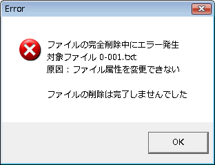
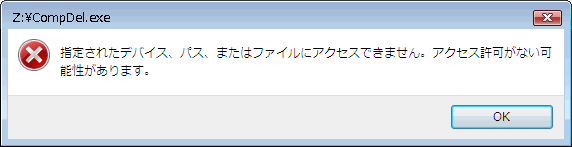

| エラーと対処方法 |
| エラーと対処方法 |
エラーが発生してファイルの完全削除がうまくいかなかった場合、次のようなダイアログを表示して警告を行います。

フォルダや特殊ファイルを消去しようとしました。これらは安全のため削除できないようにしています。当該ファイルに対する削除のプロセスは始まっていません。
これらは、削除対象ファイルに対する書き込み権限が無い場合や、ディレクトリ名を含めたファイル名が長すぎるてWindowsのコマンド引数制限に掛かった場合、その他扱えない種類のファイルの場合に表示されます。
原因不明の場合は、機能設定：表示モードで、｢消去段階ごとに一旦停止し、ダイアログを表示する｣をONにして原因を発見して下さい。
これらは、フロッピー･ディスクなどで、残り容量の少なくなったディスクで起こることがあります。ダミーファイルを作成するだけのフォルダ領域の容量がありませんので、機能設定：詳細設定２で、ダミー･ファイルを作成させないようにしてください。

多数のファイルをドラッグ アンド ドロップすると、コマンドライン引数が規定（Windows98系の場合256Bytes, Windows XP系の場合2048Bytes）サイズを超えてしまうことがあります。一度に”送る”ファイル数を減らしてください。